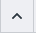

Intel® Graphics Performance Analyzers
User Guide
System Analyzer UI Reference
Use System Analyzer tool of the Intel® GPA to monitor your application performance metrics in real time to determine whether the application is CPU-bound or GPU-bound.
The System Analyzer tool allows you to:
Collect various metrics when running your application, or profile your system in the System View mode
Analyze the results
Capture data for further analysis
Export metrics to a CSV file
Pause the metrics charts and zoom in and out to get a better view of the metrics
The window is divided into these main areas:
Main Toolbar
|
Export Metrics to CSV Files button |
Save metric values to a CSV file to post-process the analysis of your application. |
|
Capture Frame button |
Capture and save a frame instantly.
NOTE:
This button is available only when you select Frame Capture mode in the Graphics Monitor window and connect System Analyzer to a single host. You can also capture frames using the dedicated button on the Metrics Control pane.
|
|
|
Capture and save a trace instantly.
NOTE:
This button is available only when you select Trace Capture mode in the Graphics Monitor window and connect System Analyzer to a single host. You can also capture traces using the dedicated button on the Metrics Control pane.
|
|
Messages pane |
See messages and non-critical errors.
NOTE:
If more than one message is open, use the Up or Down arrows to navigate between messages.
|
|
Enter hostname or IP box |
Connect to a specified host system. Enter a hostname or IP address, and then click the |
|
System Information box |
Get various information about the system running System Analyzer, including the operating system version, hardware information, and system firmware. |
|
|
Open the Settings pane, which contains the following options:
|
|
Help button |
Get information on navigation controls and opens the Intel® GPA online documentation. |
Metrics Control Pane
The Metrics Control pane displays a group of hardware, driver, and application metrics used for the analysis of your system or a specific graphics application. For different target systems and workloads, there might be different metrics available. All metrics are subdivided into logical groups as described in Performance Metrics Reference.The Metrics Control pane allows you to:
Select available metrics from the list, as well as switch between metric sets
Instantly capture a trace
Instantly capture a frame
Select the process to profile
|
Type filter expression field |
Filter metrics by name. Save previous search keywords. |
|
Hide inactive metrics button |
Hide all metrics that are not available under the currently selected metric set. |
|
Collapse all groups button |
Close all unfolded groups to the list of connected hosts. |
|
|
Unfold all groups. |
|
Capture Trace button |
Capture a trace file for the connected host and save the captured trace to the folder specified in the Settings pane of the Graphics Monitor Control panel.
NOTE:
This button is available only when you select Trace Capture mode in the Graphics Monitor window.
|
|
Select Process button |
Select an available application for analysis or switch to System View mode. |
|
|
Switch between different metric sets. This option is only available on systems with Intel® Graphics hardware. |
|
Capture Frame button |
Capture a frame for the connected host and save the captured frame to the folder specified in the Settings pane of the Graphics Monitor Control panel.
NOTE:
This button is available only when you select Frame Capture mode in the Graphics Monitor window.
|
|
|
Open the color palette to customize individual track colors. |
Metrics Charts Pane
The Metric Charts pane can accommodate an unlimited number of charts that visualize the metrics collected by the System Analyzer.
You can customize the System Analyzer Metric Charts pane as follows:
Display any combination of metrics and instantly switch between different counter sets.
Combine multiple metrics with the same measurement unit on one chart by dragging the charts onto each other. For example, the EU Active (%) and EU Stall (%) metrics can be combined since these metrics are represented as percentage. To do this, grab the metric by the tab and drag it onto another chart, or drag a metric from the Metrics Control pane and drop it onto an existing chart. To remove a track from the combined chart, click the Close button by the metric name.
Change the appearance of each chart by switching between Bar Chart and Line Chart modes. If multiple metrics are combined on one chart in Bar Chart mode, their values are added to each other.
Zoom in and out on the charts to get a closer look, using Pause mode.
Once you customize the chart area, System Analyzer saves your settings and restores them next time you run an analysis.
The pane is divided into two main areas:
 Chart Details panes
Chart Details panes
Each chart displays a graph for the selected metrics over time. The Chart Details pane of each chart provides the following metric data:
Metric name and units
Minimum value for the visible chart area (“L”)
Current value
Maximum value for the visible chart area (“H”)
Metric Charts and Controls
| Timeline ruler |
Correlate all the displayed metrics with the time line. Depending on the zoom-in level, the time intervals are displayed in seconds, milliseconds, microseconds, on nanoseconds. |
|
/ Real-time Mode/Pause Mode toggle |
Pause the metric charts at any point. When Pause mode is enabled, the System Analyzer shows metric values for the preceding period specified by the Pause mode caching duration option of the Settings pane. In the Pause mode, metric collection continues in the background, and you can zoom in on the charts to get a closer look. Click the button again to resume metric display in real time. |
|
Full Zoom Out button |
Zoom out to get the full view of the metric charts. This button is only available in Pause mode. |
|
Individual chart controls |
Hover over any chart to show additional chart controls for each chart:
|